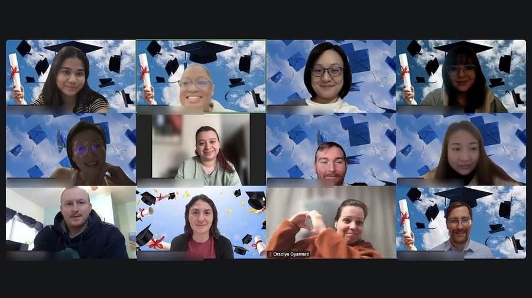
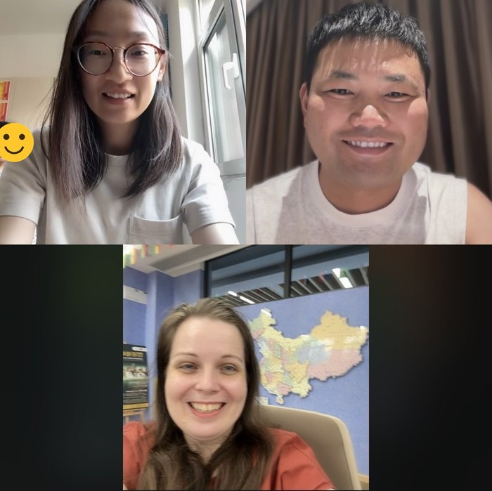

How the two programmes connect
My Moreland and Windsor studies belong together in my head. The M.Ed. gave me the theory behind what I do — so when anyone questions what's happening in my classroom, whether a parent, a coworker, or school management, I have a professional answer supported by research. Not just "it feels right" or "it works in my classroom." That confidence changed things for me. It's what made it possible to move to a school that works much closer to my own teaching philosophy.
Windsor is where that foundation meets the IB framework. Moreland gave me the theory. Windsor is where I'm learning to apply it the IB way.
Completed — Moreland University M.Ed.
M.Ed., Early Childhood Education — Moreland University (TeachNow)
Completed January 2026 · Supervised by Dr. Sonja Lopez ArnakFour MECE modules covering ECE philosophy, positive learning environments, learner differences, and curriculum and instruction. Eight CERT modules covering classroom management, assessment, curriculum planning, differentiation, and clinical teaching practice — with verified video submissions recorded at BI Zandem Academy, Chongqing.
Praxis Test — Washington D.C. K-12 ESL Teaching Certificate
Planned: August–September 2026Following completion of the M.Ed., the next step is passing the Praxis examination to obtain the Washington D.C. teaching certificate — a recognised American teaching qualification that complements the IB pathway and strengthens the profile for international school appointments.

In Progress — University of Windsor IBEC PYP
IB PYP Educator Certificate (IBEC) — University of Windsor
In progress, expected August 2026Three-semester programme covering Curriculum Processes (IEC 000), Teaching and Learning (IEC 001), Assessment and Evaluation (IEC 002), and Reflective Practice. Completed units include a full Grade 2 PYP unit planner, Grade 5 metacognitive assessment design, and collaborative professional learning community work across an international cohort.
Next Steps — MYP & Ongoing IB Engagement
IB CAT1 Workshop — MYP
Planned — following PYP certificate completionThe next step after the PYP certificate: a Category 1 IB workshop to extend into the Middle Years Programme. The exact timing and subject aren't fixed yet — Language Acquisition and Individuals and Societies are the two front-runners, since they're closest to my Grades 5–8 teaching at BI Zandem and the school's MYP authorization track.
Active IB Community Participation
OngoingCommitted to becoming a more active member of the global IB teaching community — through webinars, online and offline IB events, subject-specific discussions, and connecting with IB educators internationally, including Windsor University cohort PLCs spanning four continents.
Collaboration across time zones
The Windsor cohort spans four continents, so our professional learning community exists mostly on video calls and in shared documents. For the Module 4 collaborative project, my group worked across three provinces in China — drafting independently first, then meeting to compare and argue our way to a shared position. What made it a real PLC rather than a task split three ways was the disagreement: we agreed early that where we still saw things differently after discussing, we would say so rather than smooth it over.

Windsor — Key Assignments
From Profile as Text to Lived Profile
Final reflection on the unit planning process — the thinking behind it became the heart of my teaching philosophy.
Reflecting on How We Learn English — Grade 5
Metacognitive lesson sequence using Four Corners, a Reflection Wall (Keep/Change/Try Next), and oral exit ticket. Guiding question: "What is the best way for me to learn English?" Evidence used to plan future scaffolds and groupings.
Three SMART Goals for School-Year 2026–27
Weekly personal reflection habit; continued IB subject-specific professional development; monthly collaborative team reflection session using a three-question protocol. Connected to IB Standards 0203-01 and 0203-03.
InTASC Standard 7: Planning for Instruction
Differentiated, inquiry-based sequences aligning Chinese National English Curriculum, Common Core ELA, and IB PYP transdisciplinary themes — grounded in students' lived experiences: Chongqing bridges, hotpot culture, local festivals.
Moreland M.Ed. — Selected Artifacts
The following presentations were produced during my M.Ed. at Moreland University (completed January 2026), applied directly to my classroom in Chongqing. Supervised by Dr. Sonja Lopez Arnak.
Creating a Positive Learning Environment in the Early Childhood Classroom
Research-based blog comparing Piaget and Vygotsky, covering SEL, PBIS, trauma-informed practice, and culturally sustaining pedagogy. Includes a personal vision statement on inclusive classroom design.
View presentation →ECE New Teacher Guide
Collaborative publication (with Purity, Wanda, and Zach) on identifying varying student abilities, whole and small group instruction, and heterogeneous vs. homogeneous grouping — with attention to Dual Language Learners and the Tiered Instructional Model.
View guide →Techniques for Managing Challenging Students
Applied behaviour analysis using Operant Conditioning, Carl Rogers' humanistic approach, and Jacob Kounin's preventative strategies — including a classroom scenario, goal-setting plan, and 4-week family communication timeline.
View presentation →5 Supportive Tools to Foster a Positive Attitude in ECE
Infographic highlighting Visual Schedules, Manipulatives, Emotion Cards & Calm-Down Corners, Interactive Storytelling Tools, and Reward Systems — with in-person and online applications for each.
View infographic →World Culture Week — ESL Advocacy Initiative
School-wide event proposal positioning students' home languages as academic assets. Grounded in ELL research and connected to IB international mindedness and the PYP theme How We Express Ourselves.
View proposal →Thinking Routines in Practice
Through Windsor coursework and classroom application, I've worked extensively with Project Zero thinking routines — as tools for building a culture of reflection and inquiry across grades and contexts.
Used in Module 1 reflective practice discussion — and the basis of my first blog post on the dangerous kind of reflection.
Provocation in the Grade 2 storytelling unit — students observe a cultural object before any content is introduced.
Connections, Challenges, Concepts, Changes — used in Module 3 reading response and team planning sessions.
Module 4 assignment that produced the starred question: "What if the most important thing I teach has nothing to do with English?"
Module 5 scenario on Grade 3–4 group work fairness — exploring obvious solutions, hidden options, and what the situation teaches.
Other Professional Learning
- TEFL Certification
- Joe Dale IB Exchange Webinar — "Language B: Surefire Hits with AI in the Languages Classroom" (June 2026) — the full story of what it changed is on the AI in Education page
- Ongoing exploration of IB MYP subject-specific workshop providers accessible from China
What I'm exploring next
EdD pathways with a research focus on IB implementation in Chinese bilingual schools — specifically the intersection of IB, Cambridge, and Chinese national curriculum frameworks. Potential collaboration with Southwest University Chongqing (SWU) faculty on this research thread.
How this portfolio was built
This site is not something I wrote alone in one sitting. It went through several rounds of feedback from my Windsor cohort, and the feedback changed it in ways I would not have seen myself.
Roxanne's first response was that I had plenty of content but needed to make it sound like me. That sent me back through every page cutting the polished, generic phrasing and putting my own voice back in — including the honest admission on my IB Story page that I came to the IB partly because it was trending in Chinese international schools.
Hiroaki suggested I make the link between evidence and my own growth more explicit, and add a clear statement of where I'm heading. That became the "Next steps" section on the Leadership page.
Donald's response was generous about the "profile as text to lived profile" idea and the three-part language framing. His praise actually prompted a correction: the "learn language, about language, through language" structure is Halliday's, not mine, and it now says so. Being told something of yours is good is a strange moment to check your sources, but it was the right one.